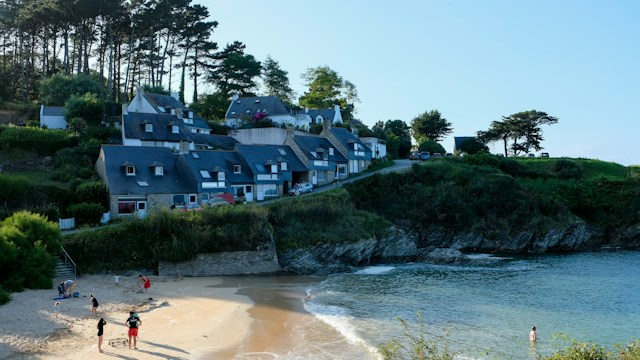

Côte d’Azur & Nice (Frankrijk)

Vlieg comfortabel rechtstreeks naar Nice of Cannes Mandelieu. Geniet samen van hondvriendelijke promenades, privédomeinen en zonnige terrassen aan de Middellandse Zee.
- Vliegtijd vanaf Zaventem: ca. 1u 45m
- Luchthavens: Nice Côte d'Azur (NCE), Cannes (CEQ)
- Huisdiervriendelijk: Uitgebreide wandelroutes en diervriendelijke beach clubs